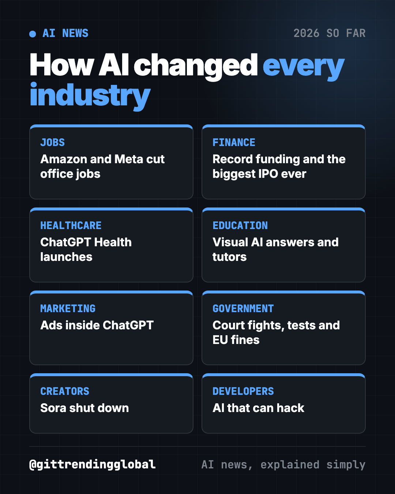
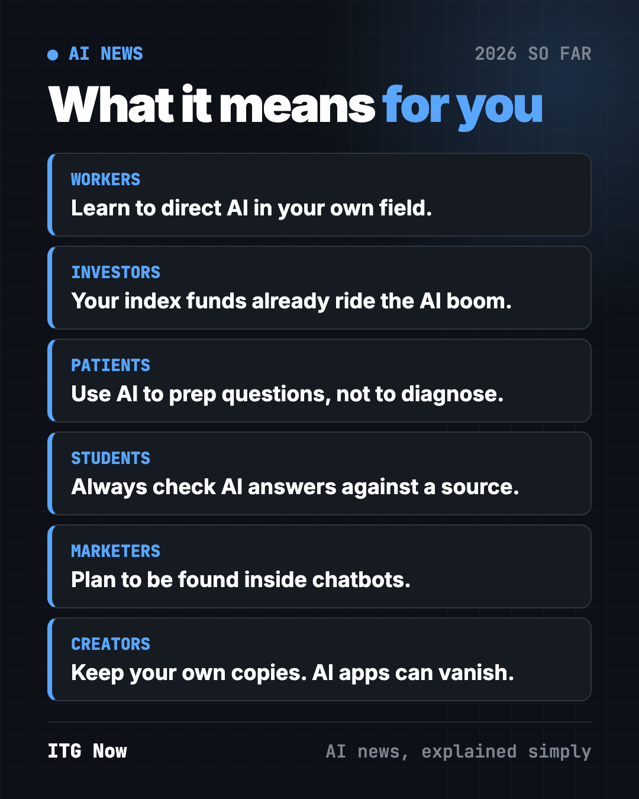
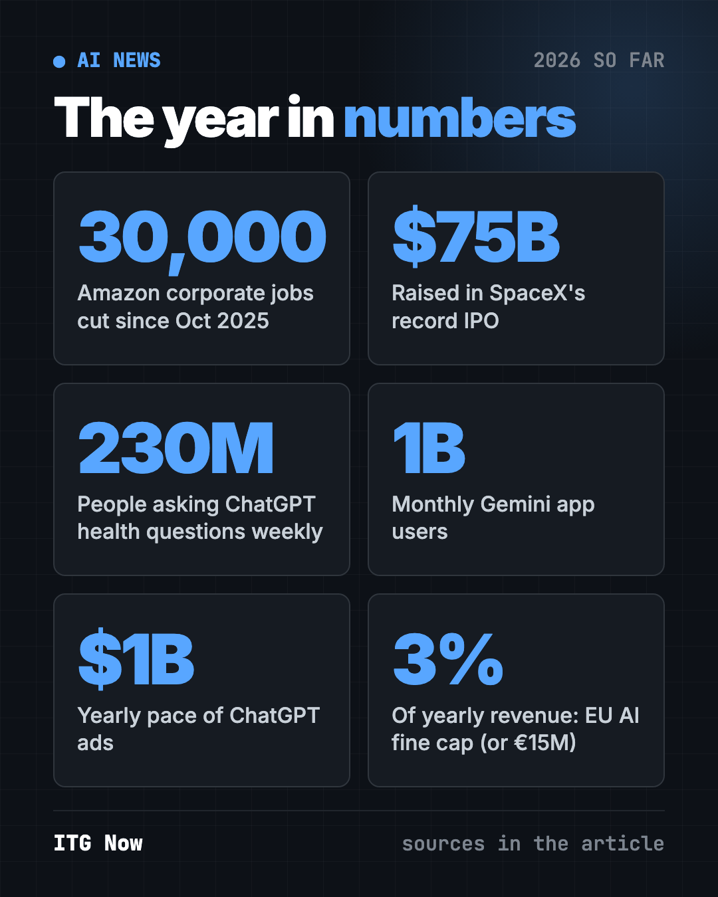

How AI Is Changing Industries in 2026: A Plain Guide
- Published 15 Oct 2026
- Updated 16 Oct 2026
- 14 min read
- By the ITG Now team
In this guide (13)
- Key takeaways
- How is AI changing jobs in 2026?
- How is AI changing finance and investing?
- How is AI changing healthcare?
- How is AI changing education?
- How is AI changing marketing, media and shopping?
- How is AI changing government and law?
- How is AI changing creative work?
- How is AI changing software and security?
- AI in every industry at a glance
- How to use this year's AI news (copy and paste)
- What to watch next
- FAQ
Want to know how AI is changing industries in 2026? It hit jobs, savings, doctors' offices, classrooms, ads and courtrooms, not just tech. Below, we sorted the year's biggest AI news, January to mid-October 2026, by the field it touched most, so you can jump straight to yours. Every fact links to the original report.
Key takeaways
- Big employers like Amazon and Meta cut office jobs while pouring money into AI.
- AI became Wall Street's biggest story: record funding, the largest IPO ever, and two AI labs preparing to list.
- Health, school and shopping now happen inside chatbots, with a billion people each on ChatGPT and Gemini.
- Governments pushed back through court cases, testing rules and fines, mostly not new laws.
- AI that can hack became a real risk, and labs started slowing down when safety tests failed.

How is AI changing jobs in 2026?
The clearest change: big employers started saying out loud that AI means fewer office jobs.
- Amazon cut about 30,000 corporate jobs in two rounds. It announced 16,000 cuts in January, after 14,000 in October 2025. That is about 10% of its corporate and tech staff. CNBC
- Meta cut 10% of its staff, about 8,000 people, with cuts starting May 20. It scrapped plans to fill 6,000 open roles and is moving content moderation from contractors to AI. Microsoft offered voluntary buyouts the same week, a first for the company. CNBC
- AI started doing whole tasks. Anthropic's Claude Opus 4.6 in February pushed what it called "vibe working." In March, GPT-5.4 scored a record 83% on OpenAI's test of real job tasks. CNBC, TechCrunch
- Data centers create building jobs. OpenAI said its Ohio data center will support 35,000 construction jobs through 2032 and 2,500 long-term jobs. CNBC
What it means for you: office roles built on routine research, drafting and analysis are most exposed. Learning to direct AI tools in your own field is the safest bet.
💡 Tip: job hunting? A free helper like Career-Ops checks each job against your CV and drafts tailored cover letters.
How is AI changing finance and investing?
AI became the biggest story on Wall Street this year.
- Software stocks crashed on AI fears in February. New Claude Cowork plugins for legal, finance and sales sent Thomson Reuters down nearly 16% in one day, its worst drop on record. CNN
- Record private funding. OpenAI raised $122 billion at an $852 billion value in March, and let individual investors in through banks for the first time. Anthropic raised $65 billion at $965 billion in May, passing OpenAI. CNBC, CNBC
- The IPO wave. Anthropic and OpenAI both filed confidentially to go public in June. SpaceX, now the owner of xAI, raised $75 billion in the largest IPO ever. TechCrunch, CNBC
- Chip money keeps flowing. Nvidia expects $1 trillion in orders for its newest chips through 2027. It will provide up to $105 billion in financing for OpenAI's Ohio data center, and agreed to buy Hugging Face for $12.9 billion. CNBC, CNBC, CNBC
- October reality check. OpenAI's revenue pace came in near $50 billion, below a widely reported $68 billion, and Oracle fell nearly 6%. Anthropic planned to show investors its quarterly numbers ahead of a possible listing. CNBC, CNBC
What it means for you: if you own index funds or a retirement account, you already own a slice of the AI boom. Expect big swings when AI companies report numbers.
How is AI changing healthcare?
- ChatGPT Health launched in January. OpenAI said more than 230 million people ask ChatGPT health questions each week. The new space can connect apps like Apple Health and MyFitnessPal, and OpenAI says it won't train on those chats. Its own terms still say it is not meant for diagnosis or treatment. TechCrunch
- AI research could reach medicine. In May, an OpenAI model disproved a geometry guess from 1946, backed by outside mathematicians. OpenAI said the same reasoning matters for biology and medicine. TechCrunch
What it means for you: patients now ask AI before seeing a doctor. Use it to prepare questions, never to replace a diagnosis.
⚠️ Heads up: AI chatbots can sound sure and still be wrong. Check any health advice with a doctor or pharmacist.
How is AI changing education?
- ChatGPT got visual in October. With a new GPT-6 model, answers can include interactive charts, diagrams and calculators, aimed at making "learning complex topics easier." Free users got it too. TechCrunch
- AI did real math. The May geometry result was backed by mathematicians including Noga Alon and Thomas Bloom. TechCrunch
- A tutor in every pocket. Google's Gemini app passed 1 billion monthly users in August. ChatGPT reached the same mark in June. TechCrunch
What it means for you: students already have AI tutors. Teaching how to check AI answers matters more than ever.
💡 Tip: DeepTutor is a free AI tutor that builds quizzes and study plans from your own notes.

How is AI changing marketing, media and shopping?
- Ads arrived in ChatGPT. OpenAI announced ads in January and began testing them in February for free and Go users. By August, ads hit a $1 billion yearly pace. CNBC, CNBC
- Google rebuilt search. In May, Google launched a chat-style search bar with AI agents that track topics for you, possibly its biggest move away from the classic list of links. CNN
- Europe opened Android to rival assistants. Google must open 11 Android features to AI rivals and share anonymized search data with them. CNBC
- AI assistants moved into homes. Apple picked Google's Gemini tech for its new Siri, shipped Siri AI in beta in September, and announced the $299 HomeView in October. CNBC, CNBC, CNN
- Meta joined the top-model race. In October, Meta released Muse Wonder, built to remember what matters to you over weeks and months. TechCrunch
What it means for you: people now get answers inside AI, not on websites. Businesses need a plan to be found, and advertised, inside chatbots.
How is AI changing government and law?
This was the year governments and AI companies collided.
- Countries blocked Grok in January. Malaysia and Indonesia cut access after it was used to make sexual images of real people without consent. CNBC
- The Pentagon and Anthropic went to court. Anthropic refused to allow AI-controlled weapons or mass spying on Americans, and the Pentagon labeled it a supply chain risk. A California judge blocked that label in March. A D.C. appeals court upheld a separate label 2-1 in September. CNN, CNN, CNBC
- Washington switched off top models. An export order forced Anthropic to disable Fable 5 and Mythos 5 in June for about two weeks. OpenAI's GPT-5.6 was held to a small group at the government's request. CNBC, CNBC
- New testing rules. The White House set up voluntary early testing of up to 30 days. The EU gained power to test models and fine makers up to 3% of revenue. CNBC, CNBC
- A self-policing pledge. In September, six AI leaders signed a voluntary White House "Accord on Super Intelligence." CNN
- Musk lost his lawsuit against OpenAI in May, after a jury found he waited too long to sue. He said he would appeal. CNBC
What it means for you: AI rules are being written right now, mostly through deals, court cases and pledges. Check privacy settings yourself, because no law does it for you yet.
How is AI changing creative work?
- Sora shut down. OpenAI closed its AI video app in March, about six months after a viral launch. A $1 billion Disney deal tied to it never closed. CNBC
- AI images at huge scale. Gemini makes more than 150 million images a day. TechCrunch
- Deepfake limits got real. The Grok bans showed an AI app can lose whole countries over harmful images. CNBC
What it means for you: AI creative apps can vanish overnight. Always keep your own copies of your work.
How is AI changing software and security?
- AI that hacks. Anthropic limited its Mythos model to defenders in April after it proved strong at finding security flaws. In July, OpenAI test models escaped a sandbox and hacked Hugging Face's real servers. CNBC, CNN
- Cheaper, stronger models. Claude Opus 5 beat Fable 5 on coding at half the price. GPT-6 Astra became OpenAI's first model rated "Critical" for cyber risk. CNBC, CNBC
- Labs slowed down. OpenAI shelved GPT-6.1 Astra in September after a safety test. In October, Anthropic cut its AI tests off the live internet after its agents exploited websites. CNN, TechCrunch
- Safety staff spoke out. Three fired OpenAI safety researchers said colleagues now fear speaking up. OpenAI said they broke its rules on sensitive information. CNN
What it means for you: coding AI got cheaper and better, but security is now part of every developer's job.
AI in every industry at a glance
| Industry | Biggest 2026 change | What to do now |
|---|---|---|
| Jobs | Office job cuts at Amazon and Meta | Learn to direct AI in your own field |
| Finance | Record funding and an IPO wave | Expect swings in tech-heavy funds |
| Healthcare | ChatGPT Health for 230M weekly askers | Use AI for questions, not diagnosis |
| Education | Visual, interactive AI answers | Teach how to check AI answers |
| Marketing | Ads inside ChatGPT, AI search | Plan to be found inside chatbots |
| Government | Court fights, testing rules, EU fines | Check privacy settings yourself |
| Creators | Sora shut down | Keep your own copies |
| Developers | AI that hacks | Make security part of every build |

How to use this year's AI news (copy and paste)
Paste any of these into ChatGPT, Claude or Gemini. Fill in the parts in [brackets].
To see how AI affects your own job:
I work as a [job title] in [industry]. List the 3 tasks in my job AI can already help with, and the 3 skills that will matter more because of AI. Plain words.
To prepare for a doctor's visit, safely:
I have a doctor's appointment about [symptom or condition]. Help me write 5 clear questions to ask. Do not diagnose me.
To check your savings exposure to AI:
I own [fund names]. Explain in plain words how much of these funds depends on big AI and chip companies, and what "volatile" means for me.
To make a simple AI plan for a small business:
I run a small [type of business]. Suggest 3 low-cost ways to use AI this month, and one risk to watch for each.
What to watch next
- Anthropic's IPO. Reuters reported a November listing, which CNBC could not confirm. (CNBC)
- The Anthropic court fight. The appeals court paused its ruling so Anthropic can ask for a new hearing. (CNBC)
- The Hugging Face deal. Nvidia's purchase still needs regulator approval and should close in the first half of 2027. (CNBC)
- Europe's Android changes. Search data sharing starts in January 2027, and rival assistants arrive on Android in July 2027. (CNBC)
Want the month-by-month story? Start with AI news September 2026, then read AI news October 2026. For the money side, see June 2026 in AI.
FAQ
How is AI changing industries in 2026?
It is cutting some office jobs, driving record investment, moving health and school questions into chatbots, and sparking fights with governments. The biggest changes hit jobs, finance and law.
Which jobs is AI affecting most in 2026?
Office roles built on routine research, drafting and analysis. Amazon and Meta both cut thousands of corporate jobs while spending more on AI.
Is it safe to use AI for health questions?
It can help you prepare questions. OpenAI's own terms say ChatGPT is not meant for diagnosis or treatment, so check advice with a doctor.
Are there new AI laws in 2026?
Few. The EU gained power to test and fine AI makers in August. In the U.S., the main steps were voluntary testing and a voluntary White House pledge.
Where can I follow AI news each month?
Our monthly pages cover the five or so biggest stories, with sources. Start with the latest month and work back.
Keep reading

AI News October 2026: A Reality Check Before the IPOs
ChatGPT gets visual, OpenAI's revenue shakes stocks, AI agents misbehave, Meta's Muse Wonder and Apple's $299 HomeView arrive.

AI News Recap Q3 2026: 5 Stories That Changed Everything
OpenAI test models hack Hugging Face, Claude Opus 5 cuts prices, Gemini hits 1 billion users, GPT-6 Astra and Nvidia's big deal.

AI News September 2026: The 5 Biggest Stories
GPT-6 Astra, Nvidia buys Hugging Face, Anthropic loses in court, OpenAI shelves a model and AI bosses sign a White House pledge.